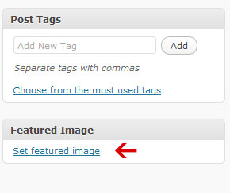
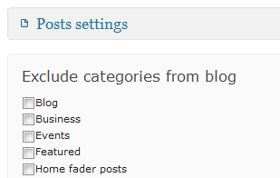
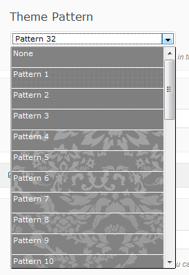

“Anthology WordPress Theme” Documentation by “Pexeto” v1.4.5
Created: 10/10/2010
By: Pexeto
http://pexeto.com/
Thank you for purchasing Anthology theme. If you have any questions that are beyond the scope of this help file, please refer to the Support section. Thanks so much!

If you like this theme, please don't forget to rate it on the ThemeForest site. Thank you!
Table of Contents
- Useful instructions
- The header
- The footer
- The sidebars
- The sliders
- Template pages
- Changing the theme style
- Shortcodes
- Translation
- Widgets included
- CSS files
- JavaScript files
- PhotoShop files
- PHP files
- Updates
- Troubleshooting
- Support
Note: If you have any questions that are beyond the scope of this help file, please refer to the Support section.
Useful instructions back to top
Activating the theme
There are 2 main ways to upload the theme:
- Via the built in WordPress theme uploader
Below you can read the instructions about installing a theme via the WordPress uploader, but you can also watch the "Installing a Pexeto Theme via WordPress Uploader" video here
First you need to unzip the download file and find the zip file called "Anthology". After this you have to go in the admin panel » Appearance » Themes, click on the Install Themes tab and in this section in the top there is a link "Upload". After you click the "Upload" link, a new page will be opened where you will be asked to find the Anthology.zip file on your local file system.
- Via FTP client
Below you can read the instructions about installing a theme via FTP, but you can also watch the "Installing a Pexeto Theme via FTP" video here
If you know the FTP login details of the server where your site is hosted and you have a FTP client installed, you might consider using this way of uploading your theme. First you have to unzip the download file, find the zip file called "Anthology", unzip it and upload the folder to the main WordPress installation folder » wp-content » themes. Please note that if you prefer this way of installation, you have to make sure that the main files of the theme are contained just within one folder of the themes folder. The right way to locate your root theme files is for example themes/Anthology but not themes/Anthology/Anthology.
After you have uploaded the theme to the server you will need to activate it. In order to activate this theme you have to go to the admin panel » Appearance » Themes. In this section you should see the theme with a title Anthology by Pexeto. Just click on Activate button and your theme should get activated.
Importing the demo content
If you would like to import the demo content and start editing the theme from the created content rather
than from scratch, you need to import the demo_exported.xml file that is included with the download
folder. You can do this by going to the WordPress admin panel -> Tools -> Import -> Select WordPress,
find the demo_exported.xml file from your local file system and upload it.
Options page
When you activate this theme, an options page is created in order to help you make the theme settings much easier. This page is located in the admin panel » Appearance » Anthology Options.
Setting a custom field
Many times in this documentation you will be told that you need to set a custom field for a page or post. There are some custom field that have been created for this theme. Those custom fields are located just below the main content area of the page/post when opened in "edit" mode. For the portfolio items the section is called "ANTHOLOGY PORTFOLIO ITEM SETTINGS" and for the pages the section is called "ANTHOLOGY PAGE SETTINGS".
Setting a thumbnail to the post
In order to set a thumbnail to a post, when creating/editing your post in the bottom of the right sidebar
there is a link "Set Featured Image":

If you click on this link, a window will be opened where
you can choose the image. When you select the desired image, you have to click on the "Use as featured image"
link.
The header back to top
Changing the logo
You can either use your own existing logo image or edit the included logo PSD file. If you choose the second option then the file you need to edit is called logo.psd
There are two main ways to change your logo:
- From the admin panel- you have to go to the options setting page » Styles and upload (or insert the image URL) in the Logo Image section. Please note that this setting won't be saved if you decide to move the theme to another WordPress installation.
- Replace the existing logo image with the new one- the image is called logo.png and is located within the images folder of the theme.
Once you have changed the image, you can also change the logo size in the options setting page » Styles » Logo Settings section.
The menu
In WordPress version 3.0 a very nice feature for menu management has been added. Now you can very easily create custom menus with a great flexibility. In order to set the main menu in the header section you have to follow these steps:
- Go to Appearance » Menus and create a new menu. After you create the menu, you can
add Page, Category and custom links from the left.
- After that in the Theme Locations section you have to select the menu that you have created.
The footer back to top
This theme supports a widgetized footer and you can insert whatever widgets you like in there. There are 4 different columns in the footer and each of them supports multiple widgets.
You just have to go to Appearance » Widgets and and drag and drop the desired widgets into the sections "Footer First Column", "Footer Second Column", "Footer Third Column" and "Footer Fourth Column".The sidebars back to top
This theme supports multiple sidebars and they are all dynamic. This means that you can put whatever you want on them.
There are 4 sidebars that go with the theme by default:- Blog Sidebar - a sidebar that is shown on the blog and on the posts from the blog
- Page Sidebar - a sidebar that is shown on the pages
- Home Sidebar - a sidebar that is shown on Featured page template
- Contact Sidebar - a sidebar that is shown on the contact page
If you would like to have more sidebars than the default ones, then you can create your new sidebars in options setting page » Sidebars.
To customize your sidebars you have to go in the admin panel » Appearance » Widgets. There you should see your sidebars on the right part of the page. Now you can drag and drop widgets from the left into your sidebars and that's it!
Here is an example of a sidebar:
The sliders back to top
Thumbnail Slider
The thumbnail slider looks like this:
In order to add images to this slider you have to go to the options setting page in the section Thumbnail Slider. All you have to do is to upload the selected image (or add its URL), link of the image (links can be set to the images, so that when the user clicks on the image to be redirected- this feature is optional) and description (also optional) and press the "Add Image" button. After you add the images, you can sort them by dragging and dropping the image box to the desired position.
Optimal image size: 942px × 314px
In the bottom of this section there is a Slider Settings subsection where you can do the main settings for this slider.
Big Thumbnail Slider
The Big Thumbnail Slider looks and functions in the same way as the Thumbnail Slider and the only difference is that it is higher. It is ideal if you need to accentuate more on the images rather on the content below.
In order to add images to this slider you have to go to the options setting page in the section Big Thumbnail Slider. All you have to do is to upload the selected image (or add its URL), link of the image (links can be set to the images, so that when the user clicks on the image to be redirected- this feature is optional) and description (also optional) and press the "Add Image" button. After you add the images, you can sort them by dragging and dropping the image box to the desired position.
Optimal image size: 942px × 450px
In the bottom of this section there is a Slider Settings subsection where you can do the main settings for this slider. If you would like to make the slider a fader (using only the Fade effect) you have to set the Animation Effect field to Fade.
Nivo Slider/Fader
The Nivo Slider looks like this:
In order to add images to this slider you have to go to the options setting page in the section Nivo Slider. All you have to do is to upload the selected image (or add its URL), link of the image (links can be set to the images, so that when the user clicks on the image to be redirected- this feature is optional) and description (also optional) and press the "Add Image" button. After you add the images, you can sort them by dragging and dropping the image box to the desired position.
Optimal image size: 942px × 314px
In the bottom of this section there is a Slider Settings subsection where you can do the main settings for this slider.
Template Pages back to top
Index/Blog page
Index page is the default home page that is opened when first installing the theme. This page actually is a blog page.
There are 2 different ways of using this template:
- As a home page- it will be opened by default on your site.
- As a normal, non-home page. In order to do this you have to create a new page, lets say that its name is "Blog". After this you have to go in the Admin Panel » Settings » Reading and you have to select "A static page" field. Below this field you have to select the page which will be your home page in the "Front page" field and you have to select the name of the page that you have just created (in our case "Blog") in the field "Posts page". Now your Blog page will contain the latest posts.
In order to exclude categories from the blog you have to go to the options setting page in the section Blog/Index » Post Settings » Exclude categories from blog. In this section you have to check the names of the categories that you want to be excluded.
Defining the number of posts on the blog:
In order to define the number of posts per page that will be shown on the blog you have to go to the options setting page in the section Blog/Index » Post Settings » Number of posts per page and you have to edit the value of this field. Default is set to 5.
Selecting a slider for the page:In order to select a slider you have to go in the options setting page in the section Blog/Index » Header Section Settings » Slider on posts/blog page. In this field you can select between Thumbnail Slider, Big Thumbnail Slider, Nivo Slider/Fader and None. If None selected, then you can insert a title in the Page Title field below.
Selecting a layout for the page
For the blog page you can select the layout to be Right Sidebar, Left Sidebar or Full Width. You can do this in the Page Layout section. This setting will affect also the blog post, archive and search layouts.
The blog sidebar:
By default this page template uses the Blog Sidebar. If you would like to use another sidebar, you can create one in the options setting page » Sidebars and after that you can select the created sidebar in the field Sidebar in the options setting page » Blog/Index section. To customize it you have to go to the Appearance » Widgets and find the selected sidebar. You can drag and drop widgets from the left into it.
Setting advanced blog pagination
In order to have advanced pagination enabled on your blog page (as on the screenshot above) you need to install the WP-Pagenavi plugin. You can read more about how to do it the section Widgets Included.
The blog posts:
The blog posts look like this:
Setting a thumbnail/image to the blog posts:
You can read here how to set thumbnails to your blog posts.
Hiding part of the content of the post with the "Read More" link:Just before the text that you want to be hidden you have to click on the "Insert more tag" button (Alt+Shift+T):
Enabling threaded comments (with reply functionality):
In order to enable threaded comments, you have to go to Settings » Discussion and check the field "Enable threaded (nested) comments x levels deep"
Home page
In order to make one page a home page you have to select the Template for this page to be Home page. If you want to set this page to be opened by default when a visitor first opens the site you have to go in the admin panel in Settings » Reading » Front page displays » Select a static page and select the page that you have just created in the Front Page list.
Setting the content of the home page
The content layout of the home page looks like this:
Basically, the structure of the Home page template consists of 2 parts- the main content and the services boxes. The main content you can insert in the main content area of the page. If you would like to have the same intro as the one on the demo (and the screenshot above), you have to use the intro shortcode:
[intro]Intro content goes here[/intro]
After that comes the services boxes section. In order to set the content and links to them you have to go to the options setting page » Home Page and there for each of the 3 boxes you can set the content, icon and button settings.
Selecting a slider for the page
In order to select a slider for the page, you have to set the custom field Slider in the page. If "None" selected there, you can set the custom field Subtitle below.
Setting the page layout
For this page you can select the layout to be Right Sidebar, Left Sidebar or Full Width. You can do this by setting the custom field Page Layout.
Featured page
The main purpose of the Featured page template is to show some featured blog posts. This page looks like this:

In order to make one page a featured posts page you have to select the Template for this page to be Featured page
Above the Featured Posts section you can insert some intro content by inserting it in the main content area of the post.
All the posts that that are shown below the main page content are posts from one category.
So the posts that you need to be shown in this page should be set to belong to one "featured" category. To set the category whose posts will be
shown you have to go to the options setting page » General » Other and set the Featured Category field.
Setting a thumbnail/image to the featured posts:
You can read here how to set thumbnails to your featured posts.
Selecting a slider for the pageIn order to select a slider for the page, you have to set the custom field Slider in the page. If "None" selected there, you can set the custom field Subtitle below.
Setting the page layout
For this page you can select the layout to be Right Sidebar, Left Sidebar or Full Width. You can do this by setting the custom field Page Layout.
The sidebar
By default this page template uses the Home Sidebar. If you would like to use another sidebar, you can create one in the options setting page » Sidebars and after that you can set the custom field Sidebar and select the sidebar that you have just created. To customize it you have to go to the Appearance » Widgets and find the selected sidebar. You can drag and drop widgets from the left into it.
Hiding part of the content of the post with the "Read More" link:
Just before the text that you want to be hidden you have to click on the "Insert more tag" button (Alt+Shift+T):
Portfolio page
The main structure of the portfolio page looks like this:
To make one page a portfolio page you have to select the Template for this page to be Portfolio.
- You can select a portfolio category whose items to be displayed there by setting the custom field Display items from categories in the page. If "All Categories" has been selected, all the portfolio items that you have created will be displayed there. You can read about creating porfolio items in the next section below.
- You can select whether the items to be ordered by the date they have been created or by custom order by setting the custom field Portfolio item order in the page.
- You can set the number of thumbnails per page displayed on the right by setting the custom field Number of posts per page in the page.
- You can disable the automatic thumbnail generation by setting the custom field Turn on/off automatic thumbnail generation in the page.
- You can select a slider/fader on the portfolio page by setting the custom field Slider.
- If no slider is selected, you can add a subtitle to your portfolio page by setting the custom field Subtitle.
- You can change the words "More Projects", "Prev" and "Next" in the options setting page » Translation » Portfolio Texts.
Creating portfolio items:
Creating Portfolio items can be accomplished in the Portfolio section » Add New.
Here are the settings that you can do to each of the portfolio items:
- Set the images » Each portfolio item contains 2 images- a small thumbnail and a bigger preview image which is shown when clicking
on the small image above the main content area.
2.1. To set the bigger (preview) image or video you have to set the custom field in your post called Preview Image URL to contain the full path of the image. For example http://domain.com/img1_preview.jpg
2.2. By default the theme will create the small thumbnail by using the bigger (preview) image. However if you prefer to use your own thumbnail images you have to set the custom field Turn on/off automatic thumbnail generation in your portfolio page to off. After that in your portfolio post you have to set the custom field called Thumbnail URL and set its value to be the full path of the image. For example http://domain.com/img1.jpg. The optimal size of the images is 110px x 100px. - You can set the content of the portfolio item in the main content area.
Portfolio Gallery page
The main structure of the portfolio gallery template looks like this:
To make one page a portfolio page you have to select the Template for this page to be Portfolio Gallery.
- You can select a portfolio category whose items to be displayed there by setting the custom field Display items from categories in the page. If "All Categories" has been selected, all the portfolio items that you have created will be displayed there. You can read about creating porfolio items in the next section below.
- You can select how many columns (items per row) to be displayed by setting the custom field Number of columns in the page. You can select between 2,3 and 4 columns.
- You can select whether the items to be ordered by the date they have been created or by custom order by setting the custom field Portfolio item order in the page.
- You can show/hide the portfolio item category filter by setting the custom field
Show Portfolio Categories in the page.
The purpose of this filter is to display the portfolio categories and filter the items by the category that is set to them. If in the field Display items from categories above "All Categories" is selected, then all the portfolio categories will be displayed. If a category is selected there, only this category and its subcategories will be displayed in this filter.
- You can show/hide the portfolio item descriptions by setting the custom field Show Item Descriptions in the page. If it is set to "Show" the item descriptions will be displayed below the item thumbnail. If set to "Hide" and the the item has a description set to it, then the description is displayed in the lightbox.
- You can set the number of items displayed per page setting the custom field Number of posts per page in the page.
- You can disable the automatic thumbnail generation by setting the custom field Turn on/off automatic thumbnail generation in the page.
- You can select a slider/fader on the portfolio page by setting the custom field Slider.
- If no slider is selected, you can add a subtitle to your portfolio page by setting the custom field Subtitle.
- You can turn on/off the link of the title by setting the custom field Turn on/off title link in the page. When descriptions are displayed and this field is set to ON, then after clicking on the title the user will be redirected to the post content area.
Creating portfolio items:
Creating Portfolio items can be accomplished in the Portfolio section » Add New.
Here are the settings that you can do to each of the portfolio items:
- Select what action to be taken after clicking on the item thumbnail by setting the custom field
When clicked on the image open:. You have the following possibilities:
- Preview Image in lightbox- when clicked on the thumbnail the image that is set in the Preview Image URL custom field of the item will be displayed. By default the theme will create the small thumbnail by using the bigger (preview) image. However if you prefer to use your own thumbnail images you have to set the custom field Turn on/off automatic thumbnail generation in your portfolio page to off. After that in your portfolio post you have to set the custom field called Thumbnail URL and set its value to be the full path of the image. For example http://domain.com/img1.jpg.
- The content of the item- when clicked on the thumbnail a page that contains the main content of the item (inserted in the main content area) will be displayed. You can still use the automatic thumbnail generation functionality and generate the smaller thumbnail by inserting the image URL in the Preview Image URL field.
- Play Video- when clicked on the thumbnail a video will be played. For the video link you have to set the custom field
Custom Link/Video URL by inserting the link in there. You can still use the automatic thumbnail generation functionality and generate
the smaller thumbnail by inserting the image URL in the Preview Image URL field.
Here are some examples of inserting videos:
- YouTube video:
http://www.youtube.com/watch?v=geplBr2fcZc - Vimeo:
http://vimeo.com/11326568Please note that a vime link containing www is not valid (such as http://www.vimeo.com/11326568)
- Flash Alone:
Please note that you need to insert width and height of the video
- YouTube video:
- Custom Link- when clicked on the thumbnail the user will be redirected to a custom link that you have set in the custom field Custom Link/Video URL of the item. You can still use the automatic thumbnail generation functionality and generate the smaller thumbnail by inserting the image URL in the Preview Image URL field.
- Do Nothting - nothing happens when clicked on the thumbnail image. You can still use the automatic thumbnail generation functionality and generate the smaller thumbnail by inserting the image URL in the Preview Image URL field.
- You can set the content of the portfolio item in the main content area. This content will be displayed after clicking on the title of the item (when descriptions are enabled and title links are set to ON on the portfolio page) or after clicking on the item (if "The content of the item" has been selected as an action above).
- You can set a description to the item by setting the custom field Description.If in the portfolio page the Show Item Descriptions is set to "Show" the item descriptions will be displayed below the item thumbnail. If set to "Hide" and the the item has a description set to it, then the description is displayed in the lightbox.
- You can set the item a category so that it will be filtered by this category in the category filter above
the items (if enabled) in the right sidebar of the portfolio item page:
You can read more about the category filter in the section above (where the Portfolio page settings are described). - You can set an order number to your item if in the portfolio page the Portfolio item order field is
set to "Custom Order". You can set the order number in the Attributes section of the right sidebar:
Quick/Easy Gallery page
This video is regarding the "Dandelion" theme, but the steps you need to follow are the same for this theme. In the video are shown the main steps you need to accomplish in order to set a portfolio gallery, however for full reference please read the instructions below.
The purpose of this gallery is to insert multiple images at once - you can very quickly create multiple galleries just for several minutes.
In order to create a quick gallery you have to:
- Create a new page (you don't have to set a page template to it)
- Click on the "Add an image" button above the main content area:
- Upload the images you would like to be displayed on the gallery. As soon as you upload
the images from the page, a Gallery tab will be displayed:

- When you click on the "Show" link next to each image you can set some texts to it. The text that you enter in the Caption section will be displayed as a caption below the image. The value of the Alternate Text field will be displayed in the lightbox as a title and the value of the Title field will be displayed in the lightbox below the image.
- Once you have set all your images, you have to click on the "Save Changes" button and in your main content area you have to insert a shortcode like this one:
If the page layout is full width:
[gallery columns="5" link="file"]
If the page contains a sidebar:
[gallery columns="3" link="file"]
Contact Form page
The contact form page looks like this:

This page contains an AJAX contact form and a separate contact sidebar.
To make one page contain a contact form you have to do some settings. When you create (or edit) your page, you should find the field Template and in it to choose the Contact form page option. After that immediately your page will contain a contact form.
To set a text in the contact page, just insert it as a content of the page.
Setting the email address to which to send the emailTo set the email address, you have to go to the options setting page and in the section Contact page find the field Email to which to send contact form message in. In this field you have to insert your email address.
As you can see in this section there are some other fields that you can edit. I have provided this feature in case that you need to translate your site or just don't like the text that is output.
Setting the sidebar
By default this page template uses the Contact Sidebar. If you would like to use another sidebar, you can create one in the options setting page » Sidebars and after that you can set the custom field Sidebar and select the sidebar that you have just created. To customize it you have to go to the Appearance » Widgets and find the selected sidebar. You can drag and drop widgets from the left into it.
Selecting a slider for the page
In order to select a slider for the page, you have to set the custom field Slider in the page. If "None" selected there, you can set the custom field Subtitle below.
Setting the page layout
For this page you can select the layout to be Right Sidebar, Left Sidebar or Full Width. You can do this by setting the custom field Page Layout.
The Default page
The default page contains a separate sidebar on the right.By default this page template uses the Page Sidebar. If you would like to use another sidebar, you can create one in the options setting page » Sidebars and after that you can set the custom field Sidebar and select the sidebar that you have just created. To customize it you have to go to the Appearance » Widgets and find the selected sidebar. You can drag and drop widgets from the left into it.
Selecting a slider for the pageIn order to select a slider for the page, you have to set the custom field Slider in the page. If "None" selected there, you can set the custom field Subtitle below.
Setting the page layout
For this page you can select the layout to be Right Sidebar, Left Sidebar or Full Width. You can do this by setting the custom field Page Layout.
Changing the theme style
All the style settings can be done in the options setting page » Styles
The theme goes with several predefined skins. You can change between those skins in the Predefined Skins section:
If you would like to use another custom color, rather than one of the predefined colors, you can select your color in the Custom Theme Color field:
If you would like to select a pattern for the theme, you can do it in the Theme Pattern section. Please note that a preview of the patterns in the drop down list (as shown on the screenshot below) is available only with Mozilla Firefox.
These are the main style settings that you can do on the theme. In this section (Styles section) there are many other custom settings that you might need to change such as text sizes, text colors, background colors, etc.
Shortcodes back to top
This theme goes with 28 shortcodes. For a full reference of their usage and examples you can refer to the Features section of the demo.
Using shortcodes is really easy- you just have to insert the shortcode in the main content area of the post/page. For example, if you would like to insert a button, you have to insert a content like this one:
[button href="http://site.com"]Button text[/button]Formatting buttons available from version 1.4
In version 1.4 of the theme, some formatting buttons have been included:
There are buttons for almost all of the styled elements that the theme provides. These buttons allow you to more easily insert styled elements and also you are able to see how they will look from the editor. However, if you feel more comfortable with using raw shortcodes, you can do it - they are still available for you.
Inserting Lighbox image
There are different ways to insert a lightbox image (via the formatting buttons and the shortcodes), but the easiest way to set an image lightbox is to insert the image into the post (via the "Add an Image" button), after that click on the image -> an Edit Image button will be displayed. You have to click on this button, and in the window that is opened you have to click on the "Advanced Settings" section. In this section, in the field "Link rel" you have to insert the word lightbox. This automatically will set the lightbox functionality to the image.
Translation back to top
For this theme I have provided the possibility to translate the built-in words from the admin panel, without having to edit the PHP files. You can do this in the options setting in the Translation section. For the contact form you have to edit the fields in the Contact page section.
Widgets included back to top
The theme goes with 3 additional widgets included:
- Pexeto's portfolio posts loader - its purpose is to display the latest portfolio thumbnails in the sidebar
- WP PageNavi - displays an advanced blog pagination - downloaded from http://wordpress.org/extend/plugins/wp-pagenavi/
- Simple Google Map - displays a Google Map in the sidebar - downloaded from http://wordpress.org/extend/plugins/simple-google-map/
All the widgets are located within the plugins directory of the download folder. In order to activate them, you need to go to the WordPress admin panel -> Plugins -> Add New -> click on the Upload link and find the desired plugin file on your local file system. After the plugin has been uploaded successfully you need to click on the Activate link. For the WP PageNavi plugin only activation is needed. For the other two you need to go to the Widgets section and drag and drop them to the desired sidebar.
CSS Files back to top
The theme contains the following CSS files:
- style.css - the main CSS file
- style_ie6.css - only for Internet Explorer 6
- style_ie7.css - only for Internet Explorer 7
- style_ie8.css - only for Internet Explorer 8
- prettyPhoto.css - style for the PrettyPhoto plugin
- fonts.css- style for the fonts used
- nivo-slider.css- style for the Nivo slider
- superfish.css- style for drop-down menu -- downloaded from http://users.tpg.com.au/j_birch/plugins/superfish/#download
The first file (style.css) contains all of the specific stylings for pages. The file is separated into sections:
- Text styles (containing styles for the text)
- Logo(containing styles for the logo)
- Menu (containing the styles for the main navigation menu)
- Header (containing the styles for the header)
- Slider (containing the styles for the 3 sliders)
- Content (containing styles for the main site content)
- Sidebar Menu (containing styles for the sidebar)
- Footer (containing styles about copyrights text)
- Contact page (containing styles about contact page and the email form)
- portfolio page (containing the styles for the portfolio page)
For each of the main parts of the website there are comments. For example, for the menu the comments look like this:
/*-------------------- MENU --------------------*/ --menu styles here--
Javascript files back to top
The theme contains the following JavaScript files:
- jquery-1.4.js- jQuery- downloaded from http://jquery.com/
- slider.js- this is the thumbnail image slider. See here how to work with the slider.
- script.js- this is the main script for the page. It uses some simple functions used in the website like validation and making AJAX request for sending email.
- supersleight.js- this is a script that makes transperant .png images to look transperant in Internet Explorer 6 - downloaded from http://24ways.org/2007/supersleight-transparent-png-in-ie6/
- jquery.prettyPhoto.js- this ithe jQuery plugin for lightbox effect for the images on the portfolio page- downloaded from http://www.no-margin-for-errors.com/projects/prettyPhoto-jquery-lightbox-clone/#download
- portfolio-setter.js- this is the script that contains the main gallery and gallery with descriptions functionality
- portfolio-previewer.js- this is the script that contains the portfolio showcase functionality
- superfish.js- this is the script for the drop-down menu- downloaded from http://users.tpg.com.au/j_birch/plugins/superfish/#download
- jquery-easing.js- for the animation transitions- downloaded from http://gsgd.co.uk/sandbox/jquery/easing/
- jquery.nivo.slider.pack.js- the Nivo slider- downloaded from http://nivo.dev7studios.com
- jquery.tools.min.js- jQuery Tools library- downloaded from http://flowplayer.org/tools/download/index.html
- ajaxupload.js- script for the image uploading- downloaded from http://valums.com/ajax-upload/
- colorpicker.js - script for the color picker- downloaded from http://eyecon.ro/colorpicker/#download
- jquery-ui.js- jQuery UI - downloaded from http://jqueryui.com/
PhotoShop files back to top
There are 4 PSD file included in this theme. Every PSD file has a clear structure and is organised in groups with well named layers.
Graphic sources:
- Images used on the demo: http://www.flickr.com/photos/dexxus - Special thanks!
- Icons: http://www.iconfinder.com/blog/anniversary/
- Pixel patterns http://naomiatkinsonproducts.com/
- Vector Patterns http://speckyboy.com/2010/04/08/6-free-vector-seamless-backgrounds-source-files/
- Grunge Brushes http://wefunction.com/2010/04/42-more-subtle-grunge-brushes/
- Social Media Icons http://www.komodomedia.com/blog/2009/06/social-network-icon-pack/
PHP files back to top
Except the main files needed for this theme to run, here are the other external PHP files used:
- timthumb.php- the purpose of this script is to create small thumbnails from bigger images. The file is downloaded from: http://code.google.com/p/timthumb/
- upload-handler.php- this is the file that contains the functionality for the image uploading in the theme options page - downloaded from http://valums.com/ajax-upload/
- update-notifier.php - this is the file that contains the functionality for the update notifications when a new update of the theme is available - downloaded from https://github.com/unisphere/unisphere_notifier
Updates back to top
Installing an update
There are two main ways of installing an update:
- By uploading the theme as a new theme- this is an easier way to accomplish this. You just have to upload the updated theme zip file via the built in WordPress theme uploader as a new theme as explained here and activate the theme. All the settings that you have made to the older theme will affect the new one.
- Via FTP - you can use an FTP client (such as FileZilla) and replace all the theme files with the updated ones.
Version 1.1
This version includes:
- Code improvements
- Added an option for hiding blog content
Version 1.2
This version includes:
- Added a sidebar generation functionality
- Code improvements
Version 1.3
This version includes:
- Added automated thumbnail cropping functionality for the thumbnail sliders- you can enable it in the Anthology Options -> Thumbnail Slider/Big Thumbnail Slider -> Settings -> Automatic Thumbnail Cropping.
- Some small issues fixed
Version 1.4
This version includes:
- Added content formatting buttons - you can read more about this in the Shortcodes section
- Added Upload buttons to the portfolio item image fields
- Added WordPress Quick Gallery support - you can read here about how to set the gallery
- Fixed some small issues
- Added some other improvements
Version 1.4.1
This version includes:
- Fixed some incompatibilities for WordPress 3.1 for portfolio items
Version 1.4.2
This version includes:
- Upgraded the Nivo slider
- Upgraded the PrettyPhoto library
- Upgraded the Timthumb resizing script
- Made the theme use the jQuery library WordPress provides, rather than its local copy - this would improve the performance and plugin compatilbility
- Fixed some small issues
- Code improvements
Version 1.4.3
In this version we have improved the Thumbnail Slider functionality when browser tab is minimized - jQuery 1.6 is now using the new requestAnimationFrame method provided by browsers to make the animations even smoother which leads to some additional animations when the browser tab was minimized and maximized back.
Version 1.4.4
In this version we have updated Timthumb (the image resizing script) to the latest version (1.34) - a security vulnerability was found regarding this script and version 1.34 fixes this vulnerability.
Version 1.4.5
This version includes:
- Updated Timthumb to the latest version available (2.8) - even more security has been implemented in this version
- Implemented an update notification functionality - from now on, when new updates are available of the theme, a notification will be displayed under the "Dashboard" menu.
- Added more security to the upload image functionality
- Fixed a typo in the options panel
Troubleshooting back to top
In this section you can check the most common issues and the solutions for them
- Portfolio thumbnail not generated
Sometimes the image resizing script doesn't generate the image due to the following reasons: *functions/cache directory is not editable (777)
*original image size is too big (more than 2000 pixels)
*original image is not located within the WordPress installation directory - Portfolio section does not exist in the main menu
This theme is available for WordPress version 3.0 or higher, so please make sure you have the latest version installed.
- Appearance » Menus section does not exist
This theme is available for WordPress version 3.0 or higher, so please make sure you have the latest version installed.
- Portfolio items not loading
This issue is mostly likely to happen if you have uploaded the theme via an FTP client. If so, you need to make sure that the main theme files are contained within just one directory of the wp-themes directory, not more. For example for the style.css file it is correctly to be located within http://site.com/wp-content/themes/Anthology/css/fonts.css but not http://site.com/wp-content/themes/Anthology/Anthology/css/fonts.css
Another possible reason for this is that you haven't inserted some of the image/video URLs correctly. So for images, please make sure you have set the image URLs and for videos please make sure you have inserted correctly the video URLs. There are some examples of correct video URLs in the Portfolio Gallery section above.
- Contact form not sending emails
- Portfolio items not loading on Internet Explorer
This issue is most likely to happen if you have a broken image URL has been inserted. In this case, please make sure that all the image URLs that you have inserted are URLs of existing images.
- In the Anthology Options Upload Button/Color Picker/Add Slider Image Functionality is not working
This is most likely to be caused by a plugin you have installed. You can try to deactivate all the plugins you have installed and check if it will work. If it turns out that a plugin is causing this, you can deactivate the plugin until you set the theme and activate it back once you are done.
This issue is mostly likely to happen if you have uploaded the theme via an FTP client. If so, you need to make sure that the main theme files are contained within just one directory of the wp-themes directory, not more. For example for the style.css file it is correctly to be located within http://site.com/wp-content/themes/Anthology/css/fonts.css but not http://site.com/wp-content/themes/Anthology/Anthology/css/fonts.css
Also another reason for this issue is that the server where the theme is hosted has some restrictions set about email sending.
Support back to top
We will do our best to assist with questions directly related to the theme set up, however please note that theme support is completely voluntary for ThemeForest authors. Therefore before you contact us, please consider finding an answer to your question in:
- The relevant section of the documentation
- Search on the Pexeto Support Forum if your question has been already answered
- Troubleshooting section above
- WordPress Codex for general WordPress questions
- Google for general questions
Once again, thank you so much for purchasing this theme! If you like it, please don't forget to rate it on the ThemeForest site.
Pexeto